Portrait Gallery
 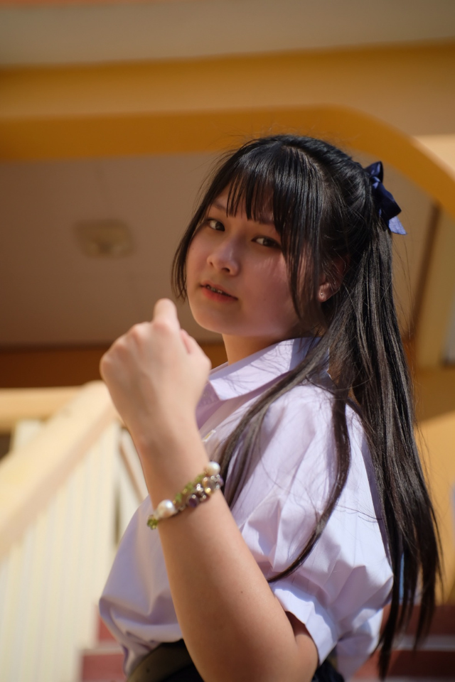
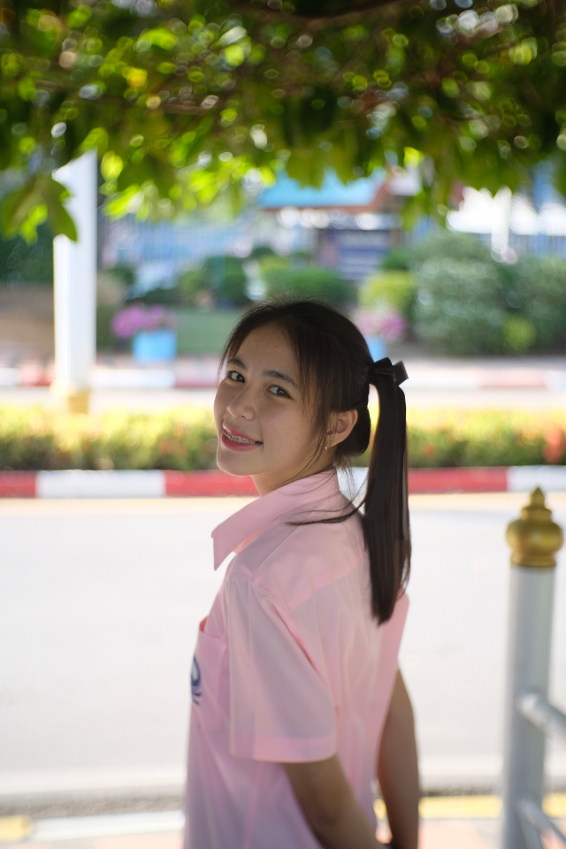
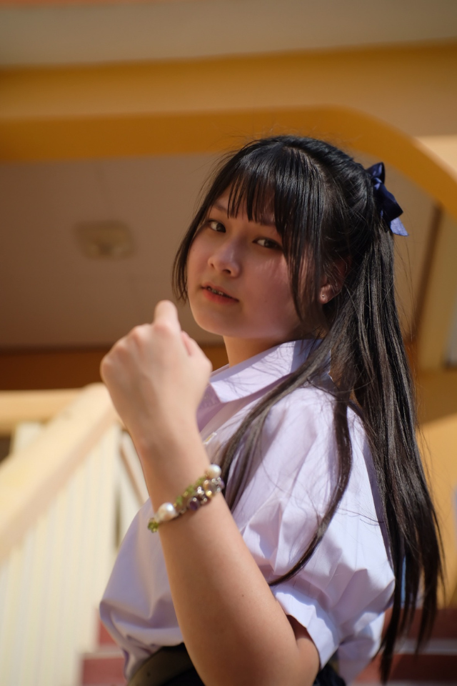
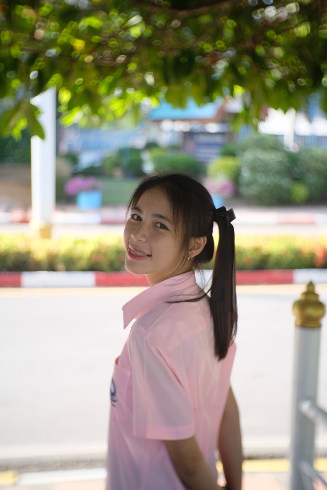
 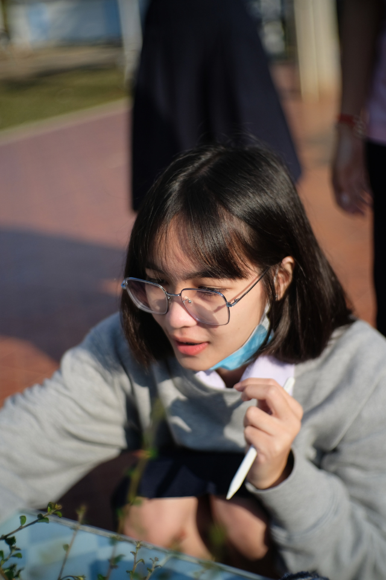
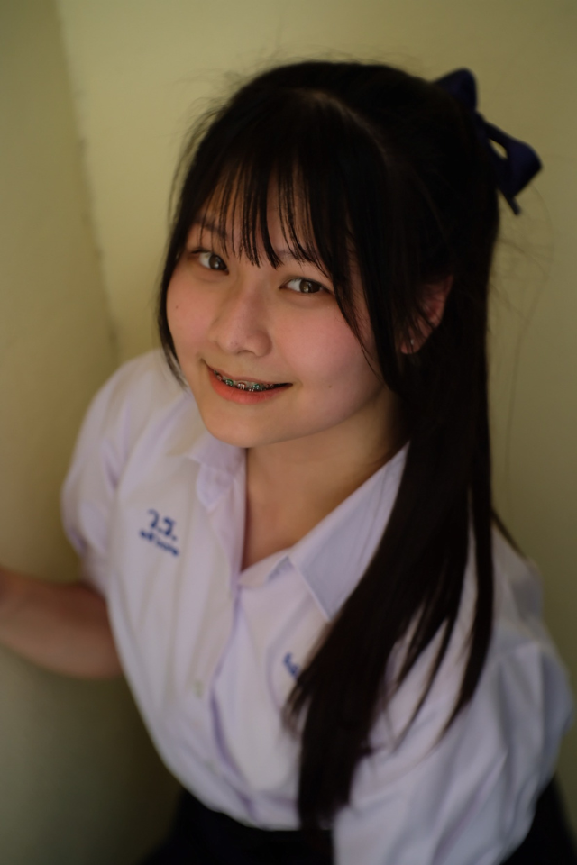
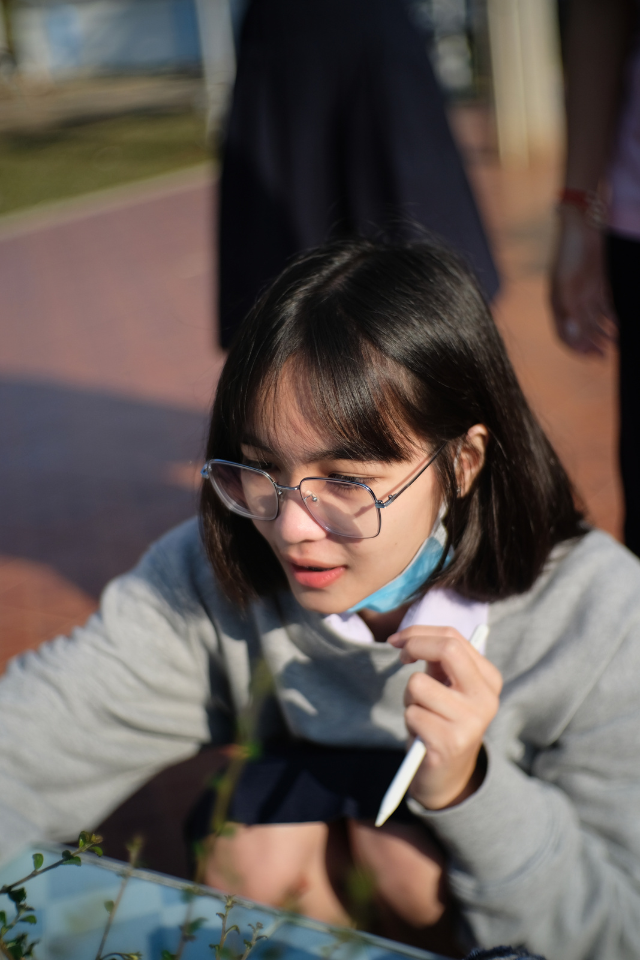
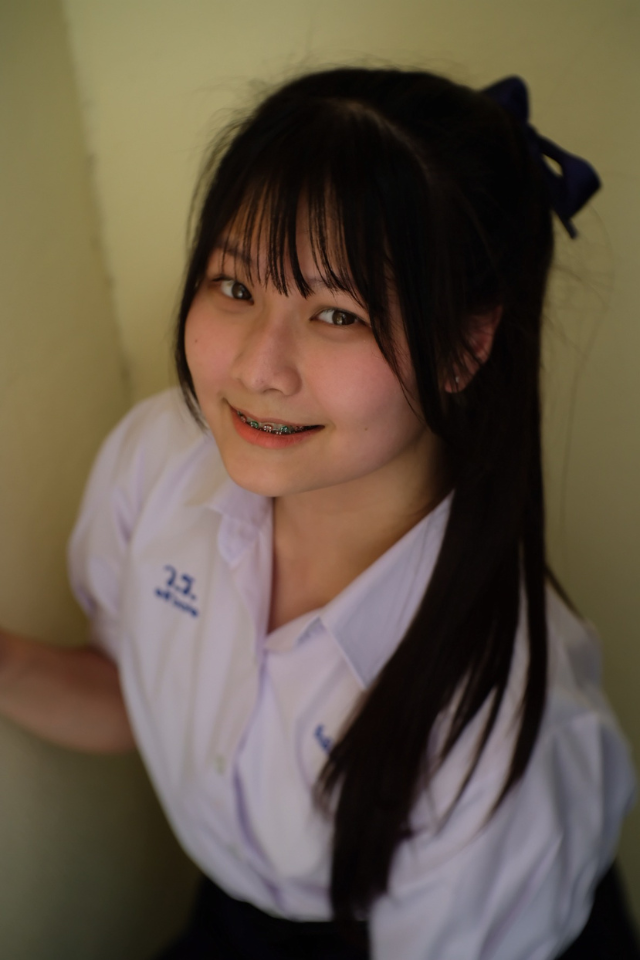
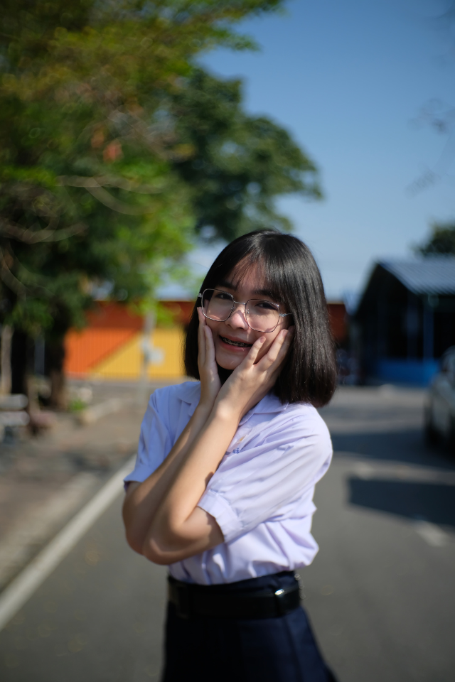

 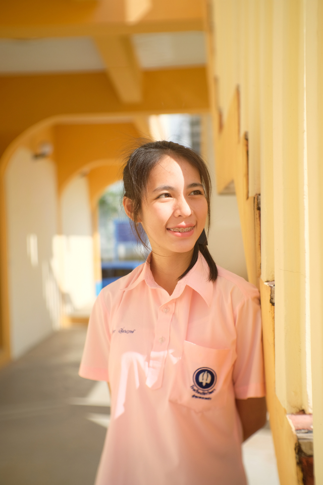
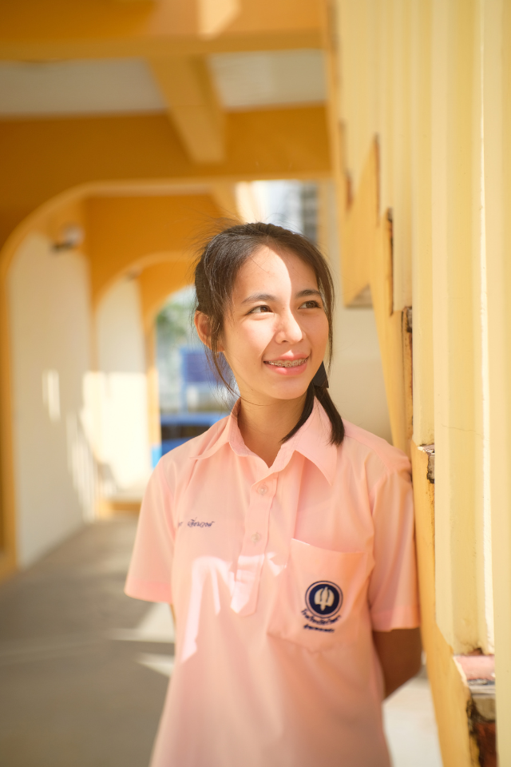

Portrait photography is the art of capturing the personality, mood, and essence of a person
or group through carefully composed images. It focuses on facial expressions, lighting,
and the subject's environment to convey deeper emotions and characteristics, often aiming
to tell a story or highlight individuality.
การถ่ายภาพ Portrait หรือภาพบุคคล เป็นหนึ่งในประเภทของการถ่ายภาพที่เน้นไปที่การบันทึกภาพของบุคคล เพื่อแสดงอารมณ์ ความรู้สึก ลักษณะเฉพาะตัว และความสวยงามในแบบของแต่ละคน ภาพ Portrait นั้นมีหลายแบบ อาจจะเป็นการถ่ายภาพศีรษะไหล่ (Headshot) หรือถ่ายเต็มตัว (Full-body) โดยความสำคัญอยู่ที่การเน้นการแสดงออกของตัวแบบ และการจัดองค์ประกอบที่ช่วยเสริมบุคลิกภาพของผู้ที่ถูกถ่ายภาพ
การถ่ายภาพบุคคลนั้นมีความสำคัญที่เรื่องของแสง การจัดแสงที่ดีสามารถสร้างมิติและเน้นความโดดเด่นของตัวแบบได้ นอกจากนี้ การใช้เลนส์ที่มีระยะโฟกัสยาว เช่น เลนส์ 85mm หรือ 50mm ก็ช่วยทำให้ภาพดูเป็นธรรมชาติ เน้นความลึกของภาพ และทำให้ฉากหลังเบลอ (Bokeh) ซึ่งจะทำให้ตัวแบบโดดเด่นขึ้นมา
สิ่งสำคัญอีกอย่างของการถ่ายภาพ Portrait คือการสร้างบรรยากาศที่ผ่อนคลายให้กับผู้ที่ถูกถ่ายภาพ การสื่อสารกับตัวแบบเพื่อให้รู้สึกสบายและเป็นตัวของตัวเองจะช่วยให้ภาพที่ได้ดูเป็นธรรมชาติและแสดงอารมณ์ที่แท้จริงของผู้ถูกถ่ายออกมา
ในยุคที่เทคโนโลยีและโซเชียลมีเดียได้เข้ามามีบทบาทในชีวิตประจำวันของเรา การถ่ายภาพ Portrait
ยังคงเป็นสิ่งที่มีความสำคัญอย่างมากและไม่สามารถถูกแทนที่ด้วยเทคโนโลยีใหม่ ๆ ได้อย่างง่ายดาย
นี่คือเหตุผลที่การถ่ายภาพ Portrait ยังคงมีความสำคัญในปัจจุบัน
1. การบันทึกความทรงจำที่มีค่า
: ภาพ Portrait ช่วยบันทึกช่วงเวลาสำคัญในชีวิต เช่น
การเฉลิมฉลองความสำเร็จหรือการแสดงออกถึงความรักในครอบครัว
ทำให้เราสามารถย้อนกลับไปสัมผัสความรู้สึกในขณะนั้น
2. การแสดงออกถึงอัตลักษณ์
: ภาพ Portrait สามารถแสดงออกถึงบุคลิกภาพและตัวตนของบุคคลได้อย่างลึกซึ้งผ่านการแต่งตัว ท่าทาง หรือสีหน้า
ทำให้สร้างความเชื่อมโยงและความเข้าใจระหว่างผู้ถ่ายภาพและผู้ที่เห็นภาพ
3. การสร้างความทรงจำในยุคดิจิทัล
: การถ่ายภาพ Portrait ช่วยให้เราสามารถเก็บรักษาความทรงจำในรูปแบบที่มีความหมายมากขึ้น
และทำให้ภาพมีคุณค่าในการแชร์เรื่องราวที่สำคัญในชีวิต
4. การสร้างความรู้สึกเอกลักษณ์
: ภาพ Portrait มักจะมีการจัดแสงและมุมกล้องที่ตั้งใจเพื่อสะท้อนความเป็นเอกลักษณ์ของบุคคล
ทำให้ภาพมีความหมายและคุณค่ามากกว่าแค่การบันทึกช่วงเวลา
5. การเสริมสร้างความสัมพันธ์
: การถ่ายภาพ Portrait เป็นวิธีที่ดีในการเสริมสร้างความสัมพันธ์ระหว่างบุคคล
โดยสามารถถ่ายทอดความรู้สึกและความคิดของทั้งผู้ถ่ายและผู้ที่ถูกถ่าย
ทำให้เกิดความเชื่อมโยงที่ลึกซึ้งและมีความหมายมากขึ้น
1. Classic Portrait : เป็นภาพบุคคลแบบดั้งเดิมที่มักจะถ่ายในลักษณะเคร่งขรึมและเป็นทางการ
โดยมักใช้การจัดแสงและการจัดตำแหน่งที่เน้นความสง่างามและมีสไตล์คลาสสิก
2. Environmental Portrait : เป็นการถ่ายภาพบุคคลในสภาพแวดล้อมที่เกี่ยวข้องกับบุคคลนั้น เช่น
การถ่ายภาพในที่ทำงานหรือสถานที่ที่บุคคลมีความสำคัญ ซึ่งช่วยเพิ่มบริบทและเรื่องราวให้กับภาพ
3. Lifestyle Portrait : เน้นการถ่ายภาพบุคคลในช่วงเวลาที่เป็นธรรมชาติและไม่เป็นทางการ
โดยมักจะจับภาพพฤติกรรมและกิจกรรมที่บุคคลทำในชีวิตประจำวัน
4. Glamour Portrait : เน้นความสวยงามและความเซ็กซี่
โดยมักใช้การจัดแสงและการตกแต่งที่เน้นให้บุคคลดูมีเสน่ห์และโดดเด่น
5. Conceptual Portrait : เป็นการถ่ายภาพบุคคลที่มีแนวคิดหรือเรื่องราวเฉพาะ โดยใช้การจัดแสง,
ฉากหลัง,
และองค์ประกอบต่าง ๆ เพื่อสื่อความหมายหรือความรู้สึกที่ต้องการ
6. Candid Portrait : เป็นภาพบุคคลที่ถ่ายในช่วงเวลาที่บุคคลไม่ได้ตั้งใจให้ถ่าย
โดยมักจะจับภาพอารมณ์และความเป็นธรรมชาติของบุคคลในช่วงเวลานั้น
7. Self-Portrait : เป็นการถ่ายภาพของตัวเอง โดยใช้กล้องหรืออุปกรณ์ที่ช่วยให้สามารถจับภาพตัวเองได้
สามารถเป็นการแสดงออกถึงตัวตนหรืออารมณ์ของผู้ถ่าย
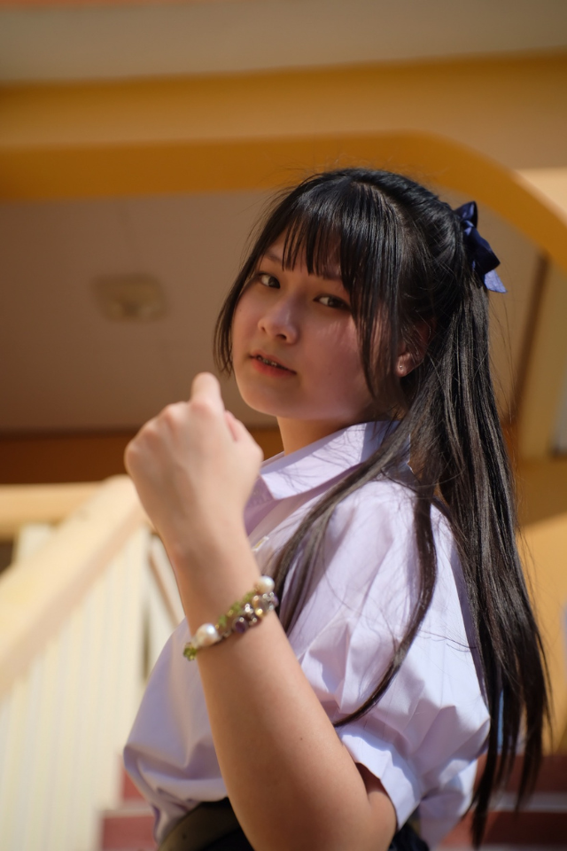
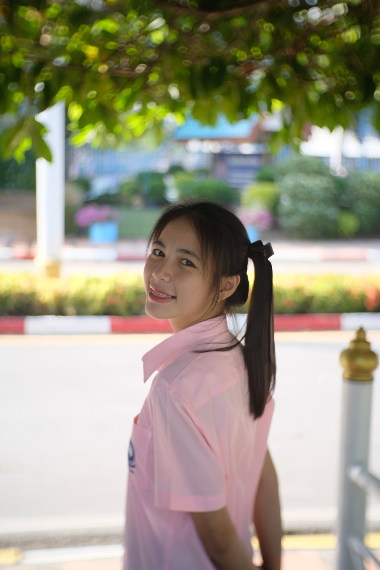
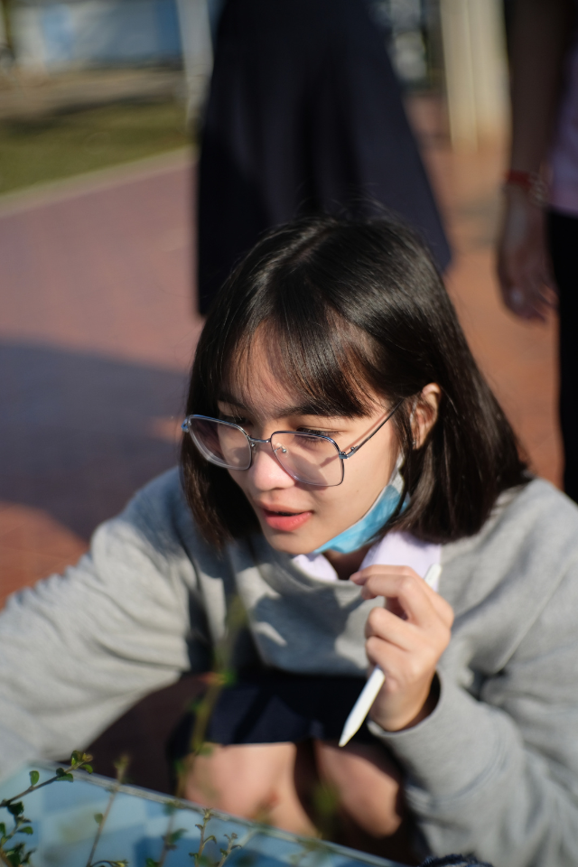
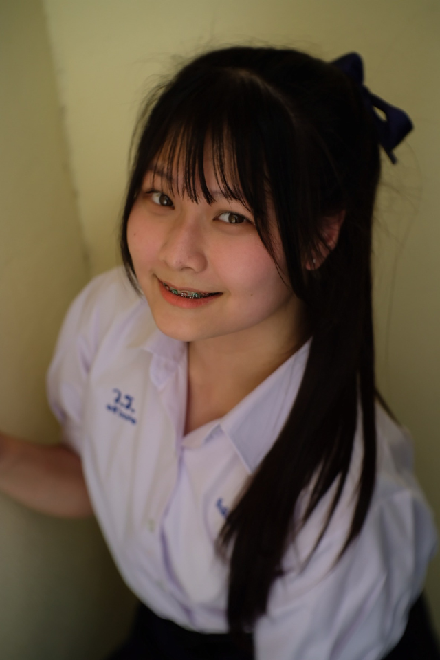
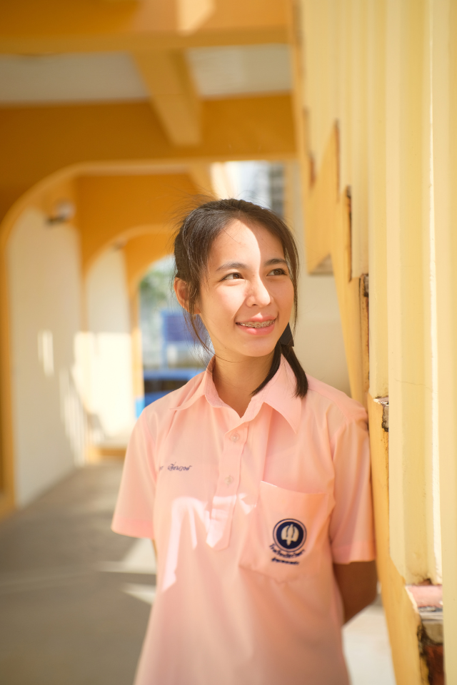
© Copyright 2024 By Phetrada Choeiphet